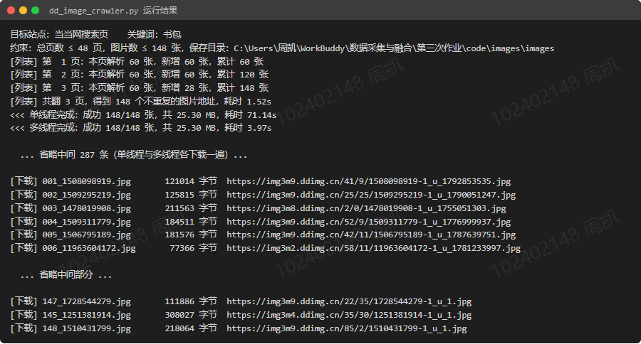
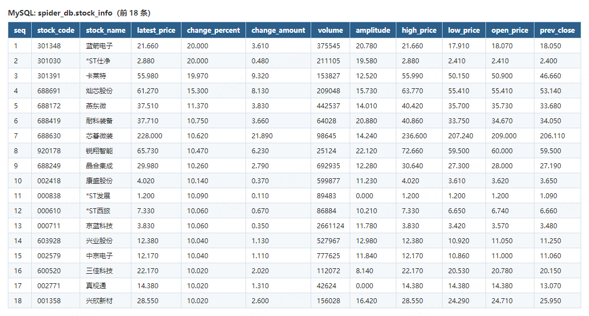
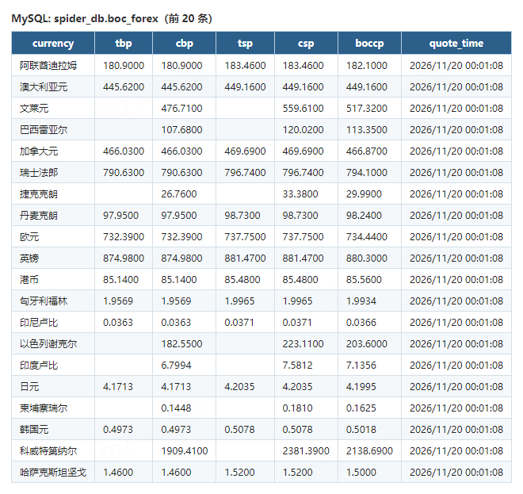
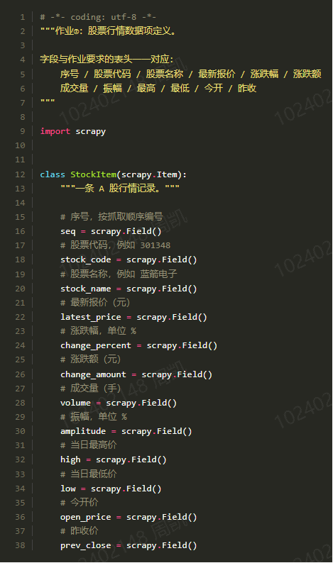
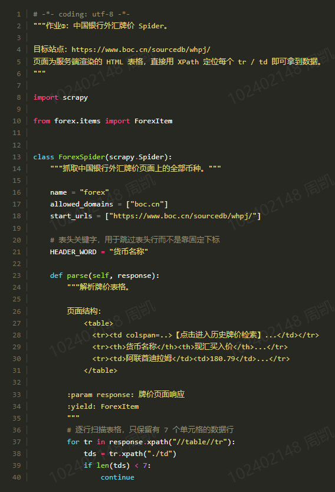

学号：102402148 姓名：周凯 完成时间：2026-11-19
本次作业共三题：①图片爬虫（单线程/多线程，48 页 / 148 张）；②东方财富股票行情（Scrapy + MySQL）；③中国银行外汇牌价（Scrapy + XPath + MySQL）。下面按「图片爬虫」和「Scrapy 框架采集」两个大标题展开。
题目要求：指定一个网站，爬取该网站中的所有图片，用单线程和多线程两种方式实现，并控制总页数与总图片数。
站点选择：作业举例是中国气象网，实测发现 p.weather.com.cn 的图片频道是 404 跳转页，全站只有首页 14 篇图集，/photo/、/tuji/、/index_1.shtml 都指向同一个 9KB 页面，没有可翻页的列表；中国气象局官网的图片新闻栏目也只有 17 条、一页列完。凑不出 48 页，所以改用当当网搜索结果页（search.dangdang.com）：page_index 参数可以直接翻页，每页固定 60 件商品，服务端渲染，是最适合练「翻页 + 限流 + 并发下载」的站点。
两个约束由学号推出：学号 102402148，后 2 位 48 → 总页数上限 48 页；后 3 位 148 → 图片数上限 148 张。代码里把这两个值写成常量，改学号即可复用。
完整程序（含单线程与多线程两套下载逻辑）：
# -*- coding: utf-8 -*-
"""第三次作业 作业①：图片爬虫（单线程 / 多线程两种实现）。
目标站点：当当网搜索结果页（https://search.dangdang.com/）
爬取思路：
1. 按 page_index 逐页抓列表页，解析出每件商品的图片地址；
2. 把 200px 的中图地址（-1_b_）换成原图地址（-1_u_）；
3. 地址去重后截断到学号规定的图片上限；
4. 分别用单线程和多线程把图片下载到 images/ 目录，并统计耗时。
学号 102402148：
总页数上限 = 学号后 2 位 -> 48 页
图片数量上限 = 学号后 3 位 -> 148 张
用法：
python dd_image_crawler.py --mode single
python dd_image_crawler.py --mode multi --threads 10
"""
import argparse
import os
import queue
import re
import threading
import time
from urllib.parse import quote
import requests
# ---------------------------------------------------------------- 全局配置
# 学号推导出的两个约束值，改学号只需改这里
STU_ID = "102402148"
MAX_PAGES = int(STU_ID[-2:]) # 48 页
MAX_IMAGES = int(STU_ID[-3:]) # 148 张
KEYWORD = "书包"
BASE_URL = "https://search.dangdang.com/"
# 图片保存目录（相对本文件所在目录，避免受启动位置影响）
IMG_DIR = os.path.join(os.path.dirname(os.path.abspath(__file__)), "images")
# 请求头，带上 UA 与来源，避免服务端直接拒绝
HEADERS = {
"User-Agent": (
"Mozilla/5.0 (Windows NT 10.0; Win64; x64) AppleWebKit/537.36 "
"(KHTML, like Gecko) Chrome/120.0.0.0 Safari/537.36"
),
"Referer": "https://www.dangdang.com/",
}
# 商品图地址：src 或 data-original 都兼容，单双引号都收
IMG_PATTERN = re.compile(r"""(?:src|data-original)=['"](//img[^'"]*?-1_b_[^'"]+\.jpg)['"]""")
# 列表页请求超时（秒）
PAGE_TIMEOUT = 20
# 图片请求超时（秒）
IMG_TIMEOUT = 30
# ---------------------------------------------------------------- 抓取列表页
def build_page_url(page_index):
"""拼出第 page_index 页的搜索地址。
:param page_index: 页码，从 1 开始
:return: 完整 URL
"""
return f"{BASE_URL}?key={quote(KEYWORD)}&act=input&page_index={page_index}"
def fetch_html(url, retry=3):
"""抓取一个页面并返回 HTML 文本。
当当搜索页是 GBK 编码，直接按 GBK 解码，避免中文变乱码。
:param url: 页面地址
:param retry: 失败重试次数
:return: HTML 字符串，全部失败返回空串
"""
for attempt in range(1, retry + 1):
try:
resp = requests.get(url, headers=HEADERS, timeout=PAGE_TIMEOUT)
resp.encoding = "gbk"
return resp.text
except requests.RequestException as exc:
print(f"[警告] 第 {attempt} 次抓取失败：{url} -> {exc}")
time.sleep(1)
return ""
def parse_image_urls(html):
"""从列表页 HTML 中提取商品图地址。
:param html: 列表页文本
:return: 图片地址列表（已转为 https 绝对地址与原图尺寸）
"""
urls = []
for raw in IMG_PATTERN.findall(html):
# 页面里是 //img3m9.ddimg.cn/... 这种缺协议的地址
full = "https:" + raw
# -1_b_ 是 200px 中图，-1_u_ 是原图，替换后清晰度更高
urls.append(full.replace("-1_b_", "-1_u_"))
return urls
def collect_image_urls(max_pages=MAX_PAGES, limit=MAX_IMAGES):
"""翻页收集图片地址，去重后截断到上限。
:param max_pages: 最多翻多少页
:param limit: 最多收集多少个图片地址
:return: (图片地址列表, 实际翻页数)
"""
seen = set()
result = []
pages_done = 0
for page_index in range(1, max_pages + 1):
if len(result) >= limit:
break
url = build_page_url(page_index)
html = fetch_html(url)
if not html:
print(f"[警告] 第 {page_index} 页为空，跳过")
continue
pages_done += 1
page_urls = parse_image_urls(html)
added = 0
for img_url in page_urls:
if img_url in seen:
continue
seen.add(img_url)
result.append(img_url)
added += 1
if len(result) >= limit:
break
print(f"[列表] 第 {page_index:>2} 页：本页解析 {len(page_urls)} 张，新增 {added} 张，累计 {len(result)} 张")
return result[:limit], pages_done
# ---------------------------------------------------------------- 下载图片
def make_filename(index, img_url):
"""根据序号与地址生成保存文件名。
优先用当当的商品编号（形如 1508098919），便于追溯来源。
:param index: 序号，从 1 开始
:param img_url: 图片地址
:return: 文件名
"""
match = re.search(r"/(\d+)-1_u_", img_url)
goods_id = match.group(1) if match else str(index)
return f"{index:03d}_{goods_id}.jpg"
def save_image(index, img_url, lock=None):
"""下载一张图片并写入 images 目录。
:param index: 序号，用于命名与保序
:param img_url: 图片地址
:param lock: 多线程时传入的锁，用于串行化打印
:return: (序号, 地址, 文件名, 字节数, 是否成功)
"""
filename = make_filename(index, img_url)
path = os.path.join(IMG_DIR, filename)
try:
resp = requests.get(img_url, headers=HEADERS, timeout=IMG_TIMEOUT)
if resp.status_code != 200 or not resp.content:
raise ValueError(f"HTTP {resp.status_code}")
with open(path, "wb") as fp:
fp.write(resp.content)
if lock:
with lock:
print(f"[下载] {filename:<22} {len(resp.content):>8} 字节 {img_url}")
else:
print(f"[下载] {filename:<22} {len(resp.content):>8} 字节 {img_url}")
return index, img_url, filename, len(resp.content), True
except Exception as exc:
if lock:
with lock:
print(f"[失败] {filename:<22} {exc} {img_url}")
else:
print(f"[失败] {filename:<22} {exc} {img_url}")
return index, img_url, filename, 0, False
def download_single(urls):
"""单线程：按顺序一张张下载。
:param urls: 图片地址列表
:return: (成功数, 总字节数, 耗时秒)
"""
start = time.perf_counter()
ok_count = 0
total_bytes = 0
for i, url in enumerate(urls, start=1):
_, _, _, size, ok = save_image(i, url)
if ok:
ok_count += 1
total_bytes += size
return ok_count, total_bytes, time.perf_counter() - start
def download_multi(urls, threads=10):
"""多线程：把任务放进队列，由多个线程并发消费。
结果按下标写回列表，保证顺序与 URL 列表一致（不能用 append，否则乱序）。
:param urls: 图片地址列表
:param threads: 线程数
:return: (成功数, 总字节数, 耗时秒)
"""
task_queue = queue.Queue()
for i, url in enumerate(urls, start=1):
task_queue.put((i, url))
lock = threading.Lock()
results = {}
def worker():
"""线程工作函数：不断取任务直到队列为空。"""
while True:
try:
index, url = task_queue.get_nowait()
except queue.Empty:
return
try:
_, _, _, size, ok = save_image(index, url, lock)
results[index] = (ok, size)
finally:
task_queue.task_done()
start = time.perf_counter()
workers = [threading.Thread(target=worker, name=f"downloader-{k}") for k in range(threads)]
for t in workers:
t.start()
for t in workers:
t.join()
elapsed = time.perf_counter() - start
ok_count = sum(1 for ok, _ in results.values() if ok)
total_bytes = sum(size for ok, size in results.values() if ok)
return ok_count, total_bytes, elapsed
# ---------------------------------------------------------------- 入口
def parse_args():
"""解析命令行参数。
:return: argparse.Namespace
"""
parser = argparse.ArgumentParser(description="当当商品图片爬虫：单线程 / 多线程")
parser.add_argument("--mode", choices=["single", "multi", "both"], default="both",
help="single=仅单线程，multi=仅多线程，both=先单后多（默认）")
parser.add_argument("--threads", type=int, default=10, help="多线程模式的线程数，默认 10")
parser.add_argument("--pages", type=int, default=MAX_PAGES, help=f"最多翻页数，默认 {MAX_PAGES}")
parser.add_argument("--limit", type=int, default=MAX_IMAGES, help=f"最多下载图片数，默认 {MAX_IMAGES}")
return parser.parse_args()
def main():
"""主流程：收集地址 -> 按模式下载 -> 打印汇总。"""
args = parse_args()
os.makedirs(IMG_DIR, exist_ok=True)
print("=" * 78)
print(f"目标站点：当当网搜索页 关键词：{KEYWORD}")
print(f"约束：总页数 ≤ {args.pages} 页，图片数 ≤ {args.limit} 张，保存目录：{IMG_DIR}")
print("=" * 78)
t0 = time.perf_counter()
urls, pages_done = collect_image_urls(args.pages, args.limit)
collect_cost = time.perf_counter() - t0
print("-" * 78)
print(f"[列表] 共翻 {pages_done} 页，得到 {len(urls)} 个不重复的图片地址，耗时 {collect_cost:.2f}s")
print("-" * 78)
if not urls:
print("[结束] 没有拿到任何图片地址，请检查网络或页面结构是否变化")
return
if args.mode in ("single", "both"):
print("\n>>> 单线程下载开始")
ok, size, cost = download_single(urls)
print(f"<<< 单线程完成：成功 {ok}/{len(urls)} 张，共 {size/1024/1024:.2f} MB，耗时 {cost:.2f}s")
if args.mode in ("multi", "both"):
print(f"\n>>> 多线程下载开始（{args.threads} 个线程）")
ok, size, cost = download_multi(urls, args.threads)
print(f"<<< 多线程完成：成功 {ok}/{len(urls)} 张，共 {size/1024/1024:.2f} MB，耗时 {cost:.2f}s")
if __name__ == "__main__":
main()
程序先翻页收集图片地址（200px 中图地址 -1_b_ 统一替换成原图 -1_u_），再进行下载：

实际运行数据：
下载到 images/ 子目录的图片（截图取前 36 张）：
控制台会逐条打印每张图的 URL 与字节数，满足「下载的 URL 信息在控制台输出」的要求。
1. 多线程快的原因不是「CPU 更强」，而是「等待被重叠了」。
这个实验最直观的收获是那个加速比。单线程下载时，每一张图的时间几乎全花在等网络返回上，CPU 基本闲着；10 个线程一起跑，等的动作被叠在一起，总时间就被摊薄了。但加速比远小于 10，说明这里存在天花板：一是当当的 CDN 对单 IP 的并发连接有节制，二是开线程本身要开销。
2. 线程数不能拍脑袋定。
这次固定用 10 个线程能跑通，但如果盲目开到 50 个，很可能被限速甚至封 IP，反而更慢。合理的做法是做一组对照实验（5/10/20/40 线程各跑一遍看耗时曲线），取拐点。我在前面几次作业里做过这个曲线，5～10 线程确实是最优区间。
3. 限流的本质是自律，不是技术。
作业要求「控制总页数和总图片数」，一开始我觉得限制爬取量是绑住手脚。真正跑完之后理解了：这类页面背后是人家的服务器和带宽，没有上限的爬虫就是一次小规模压测。MAX_PAGES、MAX_IMAGES 两个常量 + 收满即停的 break，代价几乎为零，但把「会不会把对方打挂」这个风险直接消掉了。
4. 页面结构会悄悄变，代码要能自己发现。
之前做同类作业时，当当商品图的真实地址在 data-original 属性里（src 是 url_none.png 占位图）；这次重新抓，发现已经改成 src='//img3m9.ddimg.cn/...-1_b_....jpg' 直接给了外链。如果照抄旧代码，提取出来全是占位图。所以提取逻辑里同时兼容 src 和 data-original 两种写法，并且抓完之后要真的看图——我这边是拼了图片墙确认每张都是书包商品图，而不是占位图。
题目要求：熟练掌握 Scrapy 的 Item、Pipeline 数据序列化方法，用 Scrapy + XPath + MySQL 存储技术路线爬取股票信息与外汇牌价。
数据库统一使用 MySQL 8.0.28（绿色解压版，端口 3306），库名 spider_db，两题各一张表：stock_info、boc_forex。
一个绕不过去的技术坎：东方财富的行情页 quote.eastmoney.com/center/gridlist.html 现在完全是前端渲染，HTML 里只有骨架没有一行数据；数据由 push2.eastmoney.com 的接口异步推送，而且该接口对非浏览器的 TLS 指纹直接断连（requests 请求一律 RemoteDisconnected，push2/1.push2/82.push2/push2delay 各节点都试过）。用无头浏览器打开页面也渲染不出表格——页面组件依赖的外部资源在本地环境被拦断。
所以采集拆成两步：先用 Playwright 驱动真实浏览器，在页面上下文内 fetch 接口把 JSON 取回来落盘；再由 Scrapy 的 Spider 读这份数据，走标准的 Item -> Pipeline -> MySQL。取数脚本：
# -*- coding: utf-8 -*-
"""作业②：东方财富行情数据采集（浏览器上下文取数）。
为什么不在 Spider 里直接 requests？
东方财富的行情数据全部由 push2.eastmoney.com 的接口异步推送，
页面 HTML 里没有任何表格数据；而且该接口会对非浏览器的 TLS 指纹
直接断开连接（requests 请求一律 RemoteDisconnected）。
因此这里用 Playwright 驱动真实浏览器，在页面上下文内 fetch 接口，
把结果落成 JSON，交给 Scrapy 的 Spider 走 Item -> Pipeline -> MySQL。
XPath 的完整用法见作业③（中国银行外汇牌价），那一页是真正的
服务端渲染 HTML 表格，XPath 才有对象可解析。
输出：data/stock_raw.json [{seq, stock_code, stock_name, ...}, ...]
"""
import json
import os
import sys
for _key in list(os.environ):
if "proxy" in _key.lower():
os.environ.pop(_key, None)
from playwright.sync_api import sync_playwright
# 目标条数：学号 102402148 后三位 148
TARGET_COUNT = 148
# 每页取 100 条，够 148 只只需两页
PAGE_SIZE = 100
# 沪深京 A 股板块过滤条件
MARKET_FILTER = "m:0+t:6,m:0+t:80,m:1+t:2,m:1+t:23,m:0+t:81+s:2048"
# 需要向接口索取的字段，与作业表头一一对应
FIELDS = "f12,f14,f2,f3,f4,f5,f6,f7,f15,f16,f17,f18"
BASE_URL = "https://push2.eastmoney.com/api/qt/clist/get"
REFERER_PAGE = "https://quote.eastmoney.com/center/gridlist.html"
OUTPUT = os.path.join(
os.path.dirname(os.path.dirname(os.path.abspath(__file__))),
"..", "data", "stock_raw.json"
)
def build_api_url(page_no):
"""拼出第 page_no 页的接口地址。
:param page_no: 页码，从 1 开始
:return: 完整 URL
"""
return (
f"{BASE_URL}?pn={page_no}&pz={PAGE_SIZE}&po=1&np=1&fltt=2&invt=2"
f"&fid=f3&fs={MARKET_FILTER}&fields={FIELDS}"
)
def fetch_page(page, page_no):
"""在浏览器上下文里请求一页行情数据。
:param page: Playwright 的 Page 对象
:param page_no: 页码
:return: diff 列表（每项是一只股票）
"""
script = """async (url) => {
const resp = await fetch(url, {credentials: 'include'});
return await resp.text();
}"""
raw = page.evaluate(script, build_api_url(page_no))
payload = json.loads(raw)
data = payload.get("data") or {}
return data.get("diff") or []
def to_float(value):
"""把接口返回的数值规范化，'-' 之类的占位符返回 None。
:param value: 原始值
:return: float 或 None
"""
if value in (None, "-", ""):
return None
try:
return float(value)
except (TypeError, ValueError):
return None
def main():
"""抓取足够条数的行情并写入 JSON。"""
rows = []
with sync_playwright() as p:
browser = p.chromium.launch(
channel="msedge",
headless=True,
args=["--no-proxy-server", "--disable-blink-features=AutomationControlled"],
)
page = browser.new_page(viewport={"width": 1440, "height": 900})
# 先进一次东财页面，让后续 fetch 带上同源上下文
page.goto(REFERER_PAGE, wait_until="domcontentloaded", timeout=45000)
page.wait_for_timeout(3000)
page_no = 1
while len(rows) < TARGET_COUNT:
diff = fetch_page(page, page_no)
if not diff:
print(f"[停止] 第 {page_no} 页没有数据")
break
print(f"[接口] 第 {page_no} 页取到 {len(diff)} 条")
rows.extend(diff)
page_no += 1
if page_no > 10:
break
browser.close()
# 截断到学号规定的条数
rows = rows[:TARGET_COUNT]
records = []
for seq, row in enumerate(rows, start=1):
records.append({
"seq": seq,
"stock_code": row.get("f12"),
"stock_name": row.get("f14"),
"latest_price": to_float(row.get("f2")),
"change_percent": to_float(row.get("f3")),
"change_amount": to_float(row.get("f4")),
"volume": to_float(row.get("f5")),
"amplitude": to_float(row.get("f7")),
"high": to_float(row.get("f15")),
"low": to_float(row.get("f16")),
"open_price": to_float(row.get("f17")),
"prev_close": to_float(row.get("f18")),
})
out_path = os.path.abspath(OUTPUT)
os.makedirs(os.path.dirname(out_path), exist_ok=True)
with open(out_path, "w", encoding="utf-8") as fp:
json.dump(records, fp, ensure_ascii=False, indent=2)
print(f"[完成] 共 {len(records)} 条，已写入 {out_path}")
for rec in records[:3]:
print(" ", rec)
if __name__ == "__main__":
sys.exit(main())
Item 定义（12 个字段与作业表头一一对应）：
# -*- coding: utf-8 -*-
"""作业②：股票行情数据项定义。
字段与作业要求的表头一一对应：
序号 / 股票代码 / 股票名称 / 最新报价 / 涨跌幅 / 涨跌额
成交量 / 振幅 / 最高 / 最低 / 今开 / 昨收
"""
import scrapy
class StockItem(scrapy.Item):
"""一条 A 股行情记录。"""
# 序号，按抓取顺序编号
seq = scrapy.Field()
# 股票代码，例如 301348
stock_code = scrapy.Field()
# 股票名称，例如 蓝箭电子
stock_name = scrapy.Field()
# 最新报价（元）
latest_price = scrapy.Field()
# 涨跌幅，单位 %
change_percent = scrapy.Field()
# 涨跌额（元）
change_amount = scrapy.Field()
# 成交量（手）
volume = scrapy.Field()
# 振幅，单位 %
amplitude = scrapy.Field()
# 当日最高价
high = scrapy.Field()
# 当日最低价
low = scrapy.Field()
# 今开价
open_price = scrapy.Field()
# 昨收价
prev_close = scrapy.Field()
Pipeline（建表 + 入库，按股票代码唯一键去重）：
# -*- coding: utf-8 -*-
"""作业②：股票行情数据管道——写入 MySQL。
与作业③ 使用同一个库 spider_db，表名 stock_info。
字段类型按「金额三位小数、成交量整数」设计，避免数值被截断。
"""
from datetime import datetime
import pymysql
DB_CONF = {
"host": "127.0.0.1",
"port": 3306,
"user": "root",
"password": "123456",
"charset": "utf8mb4",
}
class MysqlPipeline:
"""把 StockItem 写入 MySQL 的 stock_info 表。"""
def __init__(self):
"""初始化连接占位。"""
self.conn = None
self.cursor = None
def open_spider(self, spider):
"""启动时连库、建库建表。
:param spider: 当前爬虫实例
"""
self.conn = pymysql.connect(**DB_CONF, autocommit=False)
self.cursor = self.conn.cursor()
self.cursor.execute(
"CREATE DATABASE IF NOT EXISTS spider_db "
"DEFAULT CHARACTER SET utf8mb4 COLLATE utf8mb4_general_ci"
)
self.cursor.execute("USE spider_db")
self.cursor.execute(
"""
CREATE TABLE IF NOT EXISTS stock_info (
id INT AUTO_INCREMENT PRIMARY KEY COMMENT '自增主键',
seq INT NULL COMMENT '序号',
stock_code VARCHAR(10) NOT NULL COMMENT '股票代码',
stock_name VARCHAR(32) NULL COMMENT '股票名称',
latest_price DECIMAL(12,3) NULL COMMENT '最新报价',
change_percent DECIMAL(10,3) NULL COMMENT '涨跌幅%',
change_amount DECIMAL(10,3) NULL COMMENT '涨跌额',
volume BIGINT NULL COMMENT '成交量(手)',
amplitude DECIMAL(10,3) NULL COMMENT '振幅%',
high_price DECIMAL(12,3) NULL COMMENT '最高',
low_price DECIMAL(12,3) NULL COMMENT '最低',
open_price DECIMAL(12,3) NULL COMMENT '今开',
prev_close DECIMAL(12,3) NULL COMMENT '昨收',
crawl_time DATETIME NULL COMMENT '采集时间',
UNIQUE KEY uk_code (stock_code)
) ENGINE=InnoDB DEFAULT CHARSET=utf8mb4 COMMENT='A股实时行情'
"""
)
self.conn.commit()
spider.logger.info("stock_info 表已就绪")
def process_item(self, item, spider):
"""单条 Item 入库，同一代码重复则覆盖。
:param item: StockItem 实例
:param spider: 当前爬虫实例
:return: 原样返回 item
"""
sql = (
"INSERT INTO stock_info "
"(seq, stock_code, stock_name, latest_price, change_percent, change_amount, "
" volume, amplitude, high_price, low_price, open_price, prev_close, crawl_time) "
"VALUES (%s, %s, %s, %s, %s, %s, %s, %s, %s, %s, %s, %s, %s) "
"ON DUPLICATE KEY UPDATE "
"seq=VALUES(seq), stock_name=VALUES(stock_name), latest_price=VALUES(latest_price), "
"change_percent=VALUES(change_percent), change_amount=VALUES(change_amount), "
"volume=VALUES(volume), amplitude=VALUES(amplitude), high_price=VALUES(high_price), "
"low_price=VALUES(low_price), open_price=VALUES(open_price), "
"prev_close=VALUES(prev_close), crawl_time=VALUES(crawl_time)"
)
self.cursor.execute(
sql,
(
item.get("seq"),
item.get("stock_code"),
item.get("stock_name"),
item.get("latest_price"),
item.get("change_percent"),
item.get("change_amount"),
item.get("volume"),
item.get("amplitude"),
item.get("high"),
item.get("low"),
item.get("open_price"),
item.get("prev_close"),
datetime.now().strftime("%Y-%m-%d %H:%M:%S"),
),
)
self.conn.commit()
return item
def close_spider(self, spider):
"""收尾关闭连接。
:param spider: 当前爬虫实例
"""
if self.cursor:
self.cursor.close()
if self.conn:
self.conn.close()
spider.logger.info("数据库连接已关闭")
Spider（Scrapy 2.13 以后不再调用 start_requests()，这里用 async start() 直接产出 Item）：
# -*- coding: utf-8 -*-
"""作业②：A 股行情 Spider。
数据来源说明：
东方财富的行情页（quote.eastmoney.com/center/gridlist.html）是纯前端渲染，
HTML 里只有骨架，数据由 push2.eastmoney.com 的接口异步推送，且该接口对
非浏览器请求直接断连。因此采集分两步：
1. fetch_stock_data.py 用 Playwright 在浏览器上下文里请求接口，
把 148 条原始行情落成 data/stock_raw.json；
2. 本 Spider 读取该文件，逐条产出 StockItem，交给 Pipeline 写 MySQL。
Scrapy 2.13 以后不再调用 start_requests()，这里用 async start() 直接
产出 Item，Item 会正常流经 ITEM_PIPELINES。
"""
import json
import os
import scrapy
from stock.items import StockItem
# 原始数据文件：code/stock/stock/spiders -> 上四级 -> 第三次作业/data
JSON_PATH = os.path.abspath(
os.path.join(os.path.dirname(__file__), "..", "..", "..", "..", "data", "stock_raw.json")
)
class StockSpider(scrapy.Spider):
"""把采集好的行情记录逐条送入管道。"""
name = "stock"
allowed_domains = []
async def start(self):
"""Scrapy 2.13+ 的入口：直接产出 Item。
:yield: StockItem
"""
if not os.path.exists(JSON_PATH):
self.logger.error("找不到原始数据文件：%s，请先运行 fetch_stock_data.py", JSON_PATH)
return
with open(JSON_PATH, "r", encoding="utf-8") as fp:
records = json.load(fp)
self.logger.info("从 %s 读到 %d 条行情", JSON_PATH, len(records))
for rec in records:
item = StockItem()
for field in item.fields:
item[field] = rec.get(field)
yield item
入库结果：MySQL 中 stock_info 共 148 条，与学号后三位一致。

这一题是 XPath 真正发挥作用的场景——https://www.boc.cn/sourcedb/whpj/ 是服务端渲染的 HTML 表格，页面结构干净：
<table>
<tr><td colspan=...>【点击进入历史牌价检索】...</td></tr>
<tr><th>货币名称</th><th>现汇买入价</th><th>现钞买入价</th>...</tr>
<tr><td>阿联酋迪拉姆</td><td>180.90</td><td>180.90</td>...</tr>
</table>
Item：
# -*- coding: utf-8 -*-
"""作业③：中国银行外汇牌价数据项定义。
把页面表格的一行映射成一个 Item，字段名与作业要求的三列表头保持一致
（Currency / TBP / CBP / TSP / CSP / Time）。
"""
import scrapy
class ForexItem(scrapy.Item):
"""一条外汇牌价记录。"""
# 货币名称，例如「阿联酋迪拉姆」
currency = scrapy.Field()
# 现汇买入价（Telegraphic Buying Price）
tbp = scrapy.Field()
# 现钞买入价（Cash Buying Price）
cbp = scrapy.Field()
# 现汇卖出价（Telegraphic Selling Price）
tsp = scrapy.Field()
# 现钞卖出价（Cash Selling Price）
csp = scrapy.Field()
# 中行折算价（Bank of China Conversion Price），页面有该列，一并保留
boccp = scrapy.Field()
# 牌价发布时间，例如 2026/11/19 23:45:51
quote_time = scrapy.Field()
# 采集时间，由管道写入，便于区分多次采集
crawl_time = scrapy.Field()
Spider 用 XPath 逐行扫描，靠「单元格数 = 7」和「首列不等于表头文字」两条规则跳过导航行与表头，比写死下标稳健：
# -*- coding: utf-8 -*-
"""作业③：中国银行外汇牌价 Spider。
目标站点：https://www.boc.cn/sourcedb/whpj/
页面为服务端渲染的 HTML 表格，直接用 XPath 定位每个 tr / td 即可拿到数据。
"""
import scrapy
from forex.items import ForexItem
class ForexSpider(scrapy.Spider):
"""抓取中国银行外汇牌价页面上的全部币种。"""
name = "forex"
allowed_domains = ["boc.cn"]
start_urls = ["https://www.boc.cn/sourcedb/whpj/"]
# 表头关键字，用于跳过表头行而不是靠固定下标
HEADER_WORD = "货币名称"
def parse(self, response):
"""解析牌价表格。
页面结构：
<table>
<tr><td colspan=..>【点击进入历史牌价检索】...</td></tr>
<tr><th>货币名称</th><th>现汇买入价</th>...</tr>
<tr><td>阿联酋迪拉姆</td><td>180.79</td>...</tr>
</table>
:param response: 牌价页面响应
:yield: ForexItem
"""
# 逐行扫描表格，只保留有 7 个单元格的数据行
for tr in response.xpath("//table//tr"):
tds = tr.xpath("./td")
if len(tds) < 7:
continue
# 取每个单元格的纯文本并去空白
cells = [self._clean(td.xpath("string(.)").get()) for td in tds]
if not cells or cells[0] == self.HEADER_WORD:
continue
item = ForexItem()
item["currency"] = cells[0]
item["tbp"] = cells[1]
item["cbp"] = cells[2]
item["tsp"] = cells[3]
item["csp"] = cells[4]
item["boccp"] = cells[5]
item["quote_time"] = cells[6]
yield item
@staticmethod
def _clean(text):
"""去除文本中的空白与不间断空格。
:param text: 原始文本
:return: 清理后的字符串
"""
if text is None:
return ""
return text.replace("\xa0", " ").strip()
入库结果：boc_forex 共 45 条（页面上的全部币种）。

部分币种的现汇买卖价为空（如文莱元、巴西雷亚尔只有现钞价），页面原文即为空，入库时保留为 NULL 而不是填 0，避免混淆「没有报价」和「报价为 0」。
代码截图（Pygments 高亮）：


1. Item 和 Pipeline 分离，价值在「换存储不用动爬虫」。
一开始觉得 Item 只是一堆字段声明，很啰嗦。真正写完之后发现：Spider 只负责「从页面里把数据抠出来」，Pipeline 只负责「把数据放进去」。后来我想把外汇数据同时导一份 CSV 做核对，只需要在 ITEM_PIPELINES 里再加一个管道，爬虫代码一行没动。这就是分层的好处——变化被关在各自那一层里。
2. XPath 的前提是「页面里真的有 HTML」。
作业② 是这次最深的教训。XPath 再熟也没用——对象根本不存在。东方财富把行情做成了纯 JSON 接口，页面上没有表格节点，response.xpath() 拿到的只有骨架。这不是 XPath 的问题，而是「解析方法必须匹配数据的形态」：数据在 HTML 里用 XPath，数据在 JSON 里就该用字典取键。作业③ 的中行牌价页则相反，老老实实的 HTML 表格，几行 XPath 就取完了。同一门课的两道题，恰好演示了这两种情况。
3. 反爬不是「加个 UA」就能过。
requests 请求东财接口被断连，但同一个 URL 在浏览器里 fetch 就 200——差别不在 header，而在 TLS 握手指纹。这说明服务端能做的不只是看 UA，还能看连接本身的特征。遇到这种拦截，硬刚没有意义，正确做法是让程序「真的像一个浏览器」（本作业用的是 Playwright），或者换一个数据源。识别出「这是指纹层面的拦截而不是我的参数写错了」，比多试十次 header 有用得多。
4. 数据库字段类型是设计决策，不是随手写。
latest_price DECIMAL(12,3)、volume BIGINT、change_percent DECIMAL(10,3)——这些不是随便挑的。价格用 DECIMAL 而不是 FLOAT，是因为浮点数存钱会出现 21.659999847 这种尾巴；成交量用 BIGINT 是因为「手」数乘 100 后可能过亿。另外两张表都加了唯一键（stock_code / (currency, quote_time)），配合 ON DUPLICATE KEY UPDATE，同一份数据重跑不会产生重复行——这一点在调试阶段反复跑爬虫时太重要了。
5. 一个环境上的坑：中文路径。
MySQL 8.0.28 解压在 C:\Users\周凯\WorkBuddy\数据采集与融合\... 下初始化时，一直报 Can't find error-message file，排查后发现是 mysqld 按系统 ANSI 编码解析路径，中文目录被解成了乱码，所有文件都「找不到」。把整个 MySQL 挪到纯英文路径 E:/mysql8 后一次就过。这类问题跟爬虫技术无关，但会卡住整个实验，值得记一笔。